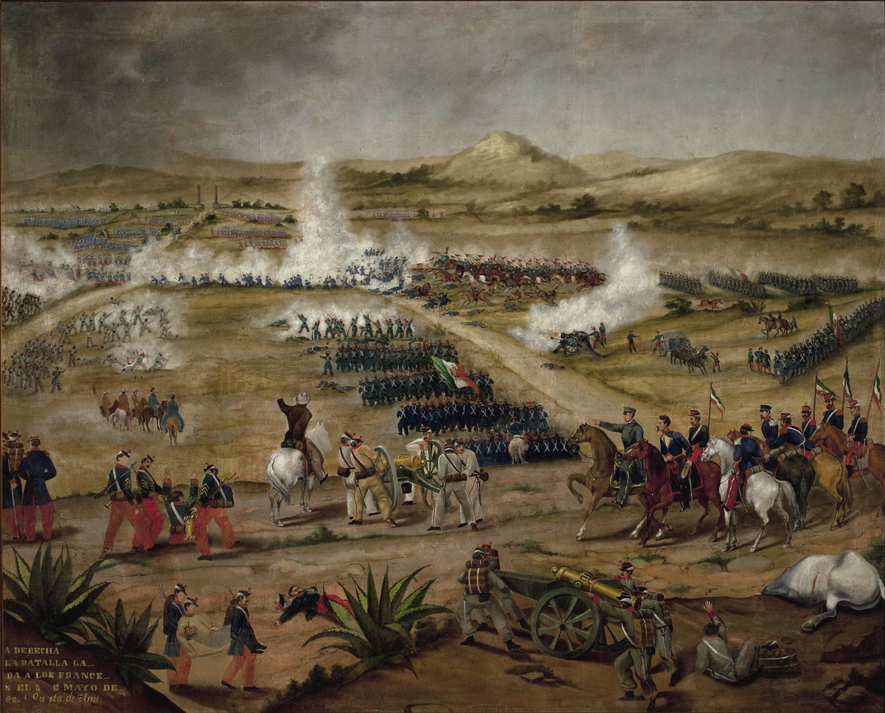

La Batalla de Puebla fue un enfrentamiento militar que tuvo lugar el 5 de mayo de 1862 en la ciudad de Puebla, México. En esta batalla, el ejército mexicano, dirigido por el general Ignacio Zaragoza, derrotó a las tropas francesas, consideradas en ese momento una de las más poderosas del mundo.
